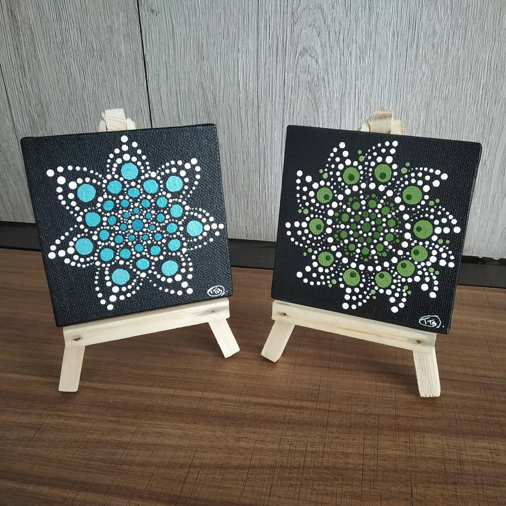

DIY MANDALAS
In frame are two very small dot mandala paintings on very small canvas and are kept on stand.
these can be painted easily and kept on small wooden stands as a piece of home decorations at a very less amount spent.
and these can be made using very less energy compared to other paintings.
One can get these stands easily online and use the mini canvas to paint such adorable manadala dot paintings and can gift it to someone.
Materials Required :
10 *10 cm Canvas.
paint brush.
A small Wooden stand.
Black acrylic paint.
white acrylic paint.
Teal blue and sap green paint.
steps one can follow(if needed) :
First take both the mini canvas and paint them all black and let it dry.
Once they dry, with scale and pencil mark the center and draw a grid in circular form and draw inner circles.
After all this is done take the smallest mandala art tool an dstart putting dots depending on the type of design you want create.
Remember to clean the mandala tool regularly while putting dots as the shape of the dot might
change because of extra paint on the tool.